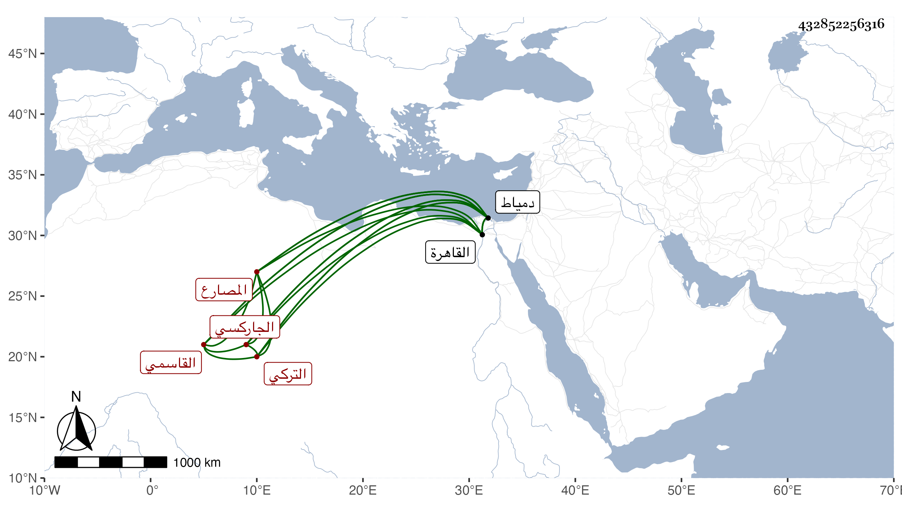

0902Sakhawi.DawLamic.ITO20230111-ara1.EIS1600.432852256316
Biography ID: 432852256316
1133
يلبغا التركي الجاركسي نسبة لجاركس القاسمي المصارع . صار خاصكيا بعد موت المؤيد فلما تملك الظاهر جقمق قربه لكونه من مماليك أخيه وأنعم عليه بأمرة عشرة وصيره من رءوس النوب ثم ولاه رأس نوبة ولده الناصري محمد ثم انفصل عنها فقط وبقي على ما عداها إلى أن استنابه في دمياط وجعله من جملة الطلبخاناه ثم عزله عن دمياط فقط قبل موته بيسير وقدم القاهرة فاستمر بها إلى أن مرض وطالت علته فأخرج الأشرف إينال إقطاعه ولزم بيته مريضا حتى مات في ربيع الآخر سنة ثمان وخمسين وقد زاد على السبعين ، وكان فيما قيل مسرفا على نفسه مهملا عفا الله عنه .
